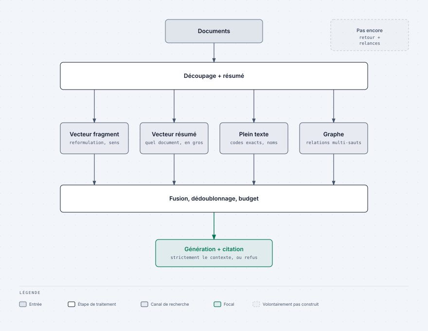
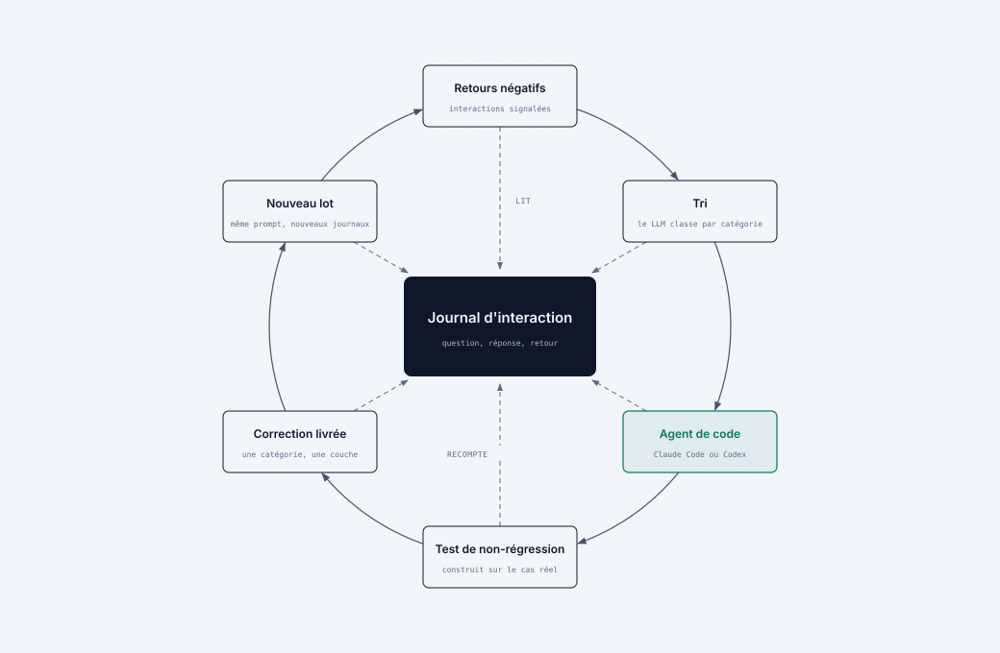
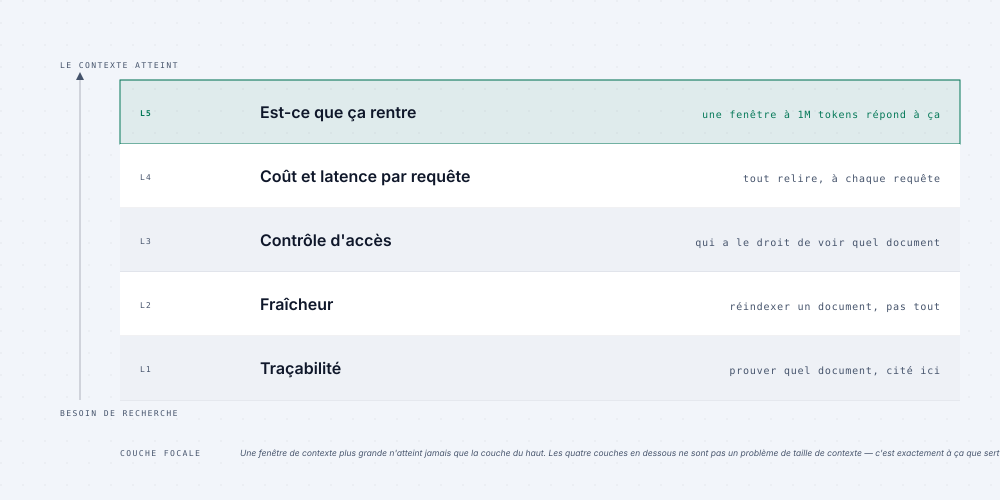
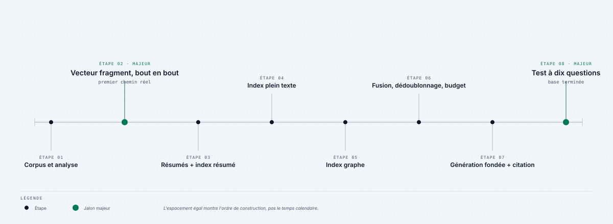

Retour au laboratoire d’ingénierie IA
RAG Formation Continue · 01 · Boucle d’amélioration en production
Transformer chaque interaction RAG en meilleure version.
Instrumenter, écouter les utilisateurs, puis donner à Claude Code ou Codex des preuves réelles plutôt qu’une demande vague.
Objectif pédagogique
Interaction → log → feedback → analyse par agent → plan → correction ciblée → nouvelles preuves. Le résultat est un plan défendable, pas une série d’intuitions.
1 · Journaliser chaque interaction
Conservez un ID stable, l’utilisateur et le point d’entrée, la question exacte, les paramètres, les documents retournés par canal, le contexte final, la réponse, les citations, la latence, le coût et les erreurs.
Une mauvaise réponse sans trace est une anecdote ; avec sa trace, elle devient un cas d’ingénierie.

2 · Mettre le feedback sur le même enregistrement
Ajoutez pouce levé, pouce baissé et commentaire facultatif sous chaque réponse. Écrivez le feedback sur le même ID : il indique quels échecs comptent pour les utilisateurs.

3 · Donner de vrais logs à Claude Code ou Codex
Prélevez 20 à 30 lignes de feedback négatif et anonymisez-les.
Transmettez la requête, les résultats par canal, le contexte, la
réponse, les citations, la latence et le commentaire. Demandez une
classification : retrieval_miss,
ranking_miss, unfaithful_answer,
over_refusal, under_refusal ou
followup_lost.
Analysez ces interactions à feedback négatif.
Donnez une classe d’échec et citez la preuve du log.
Regroupez les motifs récurrents ; ne proposez pas encore de correction.
4 · Exiger un plan puis limiter la correction
Redonnez le lot classifié à Claude Code ou Codex. Exigez un plan priorisé : preuve, couche responsable, changement, risque, critère d’acceptation, test de non-régression et vérification sur de nouveaux logs. Commencez par le plus petit correctif à fort impact.
5 · Améliorer dans un ordre observable

- Fiabiliser logs et feedback.
- Corriger une seule classe d’échec dans sa couche responsable.
- Ajouter un cas de régression issu d’une vraie interaction.
- Déployer la correction ciblée.
- Relancer la même analyse sur de nouveaux logs.
Livrable
Un backlog d’amélioration RAG priorisé, relié aux preuves de production, avec un cas de régression et une étape de réanalyse pour chaque correction.